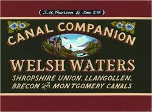

Maps can serve as vehicles of both anticipation and remembrance. This web map recalls a very pleasant vacation spent traveling by canal through Cheshire, England.
The inspiration for this journey was another map, or series of maps. Pearson’s Canal Companion series serves as a guide to, map of, and commentary upon many of the canal routes which wend their way through Britain. My uncle introduced me to Pearson’s after a recent journey he and my aunt took on the Trent and Mersey canal.
Prior to the development of the railroad in Britain, canals were the primary means of freight transport, linking inland resources, such as coal, with coastal ports. By mid-twentieth century, this canal network had fallen into disuse, but over the past several decades, have seen resurgent use for recreation and leisure. Currently there are about 2,200 miles of navigable canals and rivers in the Britain.
In August, 2016, our family rented a 69-foot-long, 7-foot-wide narrowboat (the Fjord Prince), and traveled part of the Shropshire Union Canal. Our route began in Middlewich, and traveled up the Middlewich branch to Barbridge Junction. There we turned north, and made our way to the walled city of Chester, where we spent a day sightseeing before retracing our steps. Along the way we navigated locks, dined at canal-side pubs, visited a castle ruins atop Beeston Crag, and enjoyed the pastoral beauty of the Cheshire countryside.